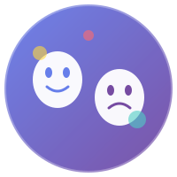

TRẮC NGHIỆM TRÍ TUỆ CẢM XÚC (EQ)
Khám phá chỉ số EQ của bạn qua 10 câu hỏi khoa học. IQ mở cửa, EQ giữ bạn ở lại!
⚠️ Lưu ý: Bài trắc nghiệm mang tính chất tham khảo, giải trí và tự phản chiếu, không phải là công cụ chẩn đoán tâm lý lâm sàng chuyên nghiệp.
🎉 CHỈSỐ EQ CỦA BẠN
0
💡 Lời Khuyên Cá Nhân Hóa
Trí Tuệ Cảm Xúc Là Gì?
🎯 Định Nghĩa
EQ (Emotional Quotient) là khả năng nhận biết, hiểu, quản lý và sử dụng cảm xúc của bản thân và người khác một cách hiệu quả.
📊 5 Thành Phần EQ
- Tự nhận thức (Self-awareness)
- Tự điều chỉnh (Self-regulation)
- Động lực (Motivation)
- Đồng cảm (Empathy)
- Kỹ năng xã hội (Social skills)
💼 Tại Sao EQ Quan Trọng?
- 90% người thành công có EQ cao
- EQ quyết định 58% hiệu suất công việc
- Lương cao hơn $29,000/năm
- Quan hệ tốt hơn, sức khỏe tốt hơn
📈 EQ Có Thể Học!
Khác với IQ (cố định), EQ có thể phát triển ở mọi lứa tuổi qua thực hành, phản hồi và rèn luyện có ý thức.
📚 Muốn Nâng Cao EQ?
Khám phá công cụ Bánh Xe Cảm Xúc và Nhật Ký Cảm Xúc!